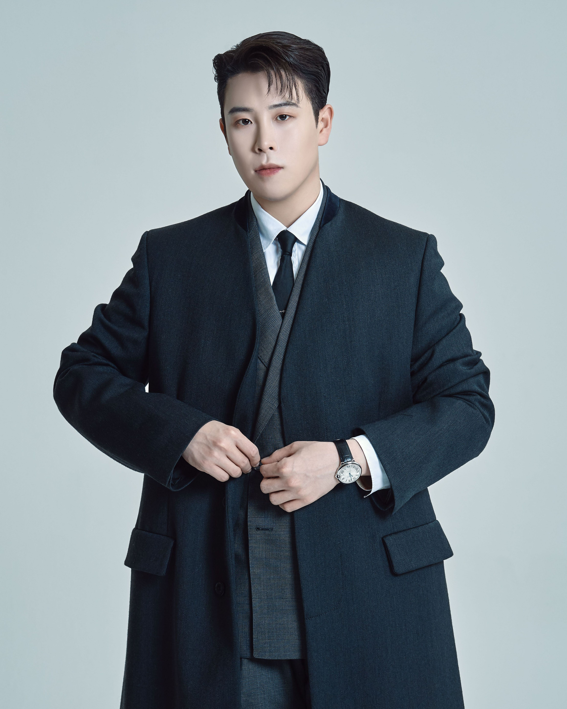
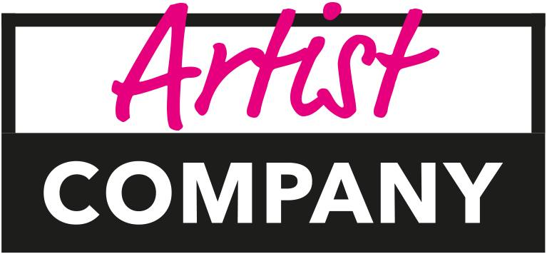
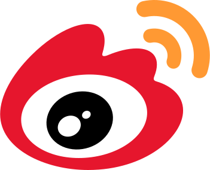

P.O
홍익대학교사범대학부속초등학교 (졸업)[9]
중암중학교 (졸업)
한림연예예술고등학교 (연예과/졸업)
동아방송예술대학교 (방송연예/전문학사)
글로벌사이버대학교 (방송연예학/학사 재학)
| 피오 P.O |
|
|  | |
| 본명 | 표지훈 (表志勳[훈음], Pyo Jihoon) | 출생 | 1993년 2월 2일[입학유예] (28세) |
| 국적 | |
| 신체 | 180cm, 80kg[4], B형[5] |
| MBTI | ESFJ[6] |
| 가족 | 아버지[7], 숙부 표진인[8] |
| 학력 | 홍익대학교사범대학부속초등학교 (졸업)[9]
중암중학교 (졸업)
한림연예예술고등학교 (연예과/졸업)
동아방송예술대학교 (방송연예/전문학사)
글로벌사이버대학교 (방송연예학/학사 재학)
|
| 종교 | 개신교 |
| 소속사 | [10] |
| 소속 그룹 | 블락비, 블락비 바스타즈 |
| 포지션 | 서브래퍼[12] |
| 데뷔 | 2011년 블락비 싱글 앨범 [Do U wanna B?] |
| 별명 | 표블리, 표모찌, 거대초딩 표돌[13], 끼돌이[14], 표준, 표코몽, 찹쌀떡, 백설기[15], 찰리[16], 트럼프[17][18], 토코몬, 캐치보이[19], 우루과이[20], 해피오[21] , 피오골계[22], 프로보필러[23], 옥희[24], 표민지[25], 올라표[26], 푱알[27], 표놀부[28], 놀토 통계청장[29] |
| 링크 | 30 |